ELK
1.ES是什么
https://www.elastic.co/cn/
https://www.elastic.co/cn/elastic-stack/
1. 从事运维，开发，大数据的人员需要学习ElasticSearch数据库
2. 需要配置日志分析架构，配置ELK技术栈
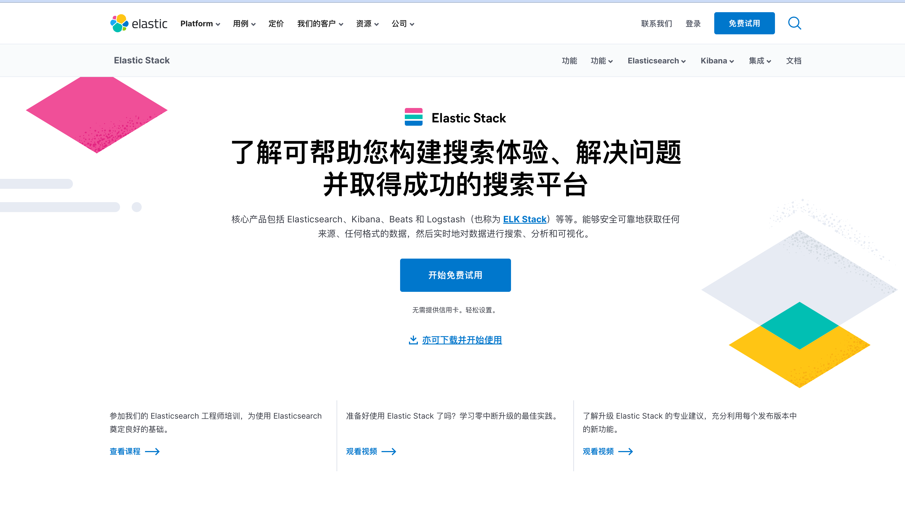
lucene搜索引擎库
https://lucene.apache.org/core/
Apache Lucene™ 是一个完全用 Java 编写的高性能、全功能搜索引擎库。
它是一种适用于几乎所有需要结构化搜索、全文搜索、分面、跨高维向量的最近邻搜索、拼写更正或查询建议的应用程序的技术。
简单说，以前要做日志搜索，需要写很多java代码，操作lucene这个库，需要深入理解索引原理。
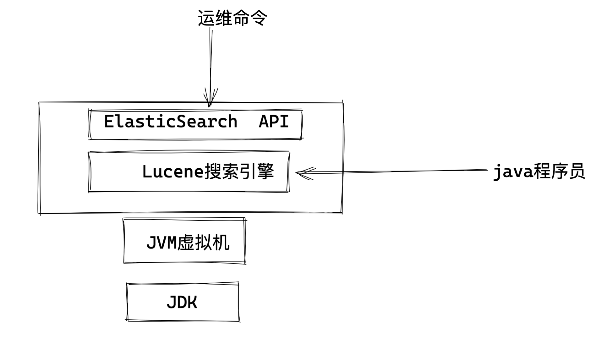
理解索引
1. 索引好比是书的目录，如果想快速找到某个章节，只需要找到目录章节里对应的页码即可。
2. 通过目录找到章节，通过章节找到页码，这就是索引的查找过程。
3. 索引存在的目的是为了加快数据的搜索。
4. 全文检索full-text search指的是，先创建索引，然后对索引进行查找。
5. 倒排索引指的是，例如我们平时用百度找东西，是利用关键字去查找相关的内容。
好比有一本书，我们可以根据目录，找到页码，但是如果我要找的内容，不清楚在哪一个章节，这咋办呢。
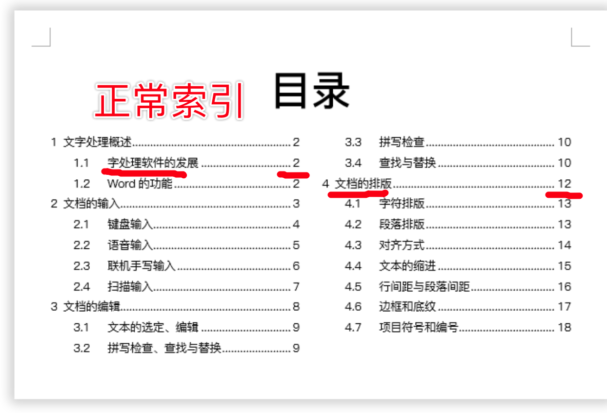
倒排索引
https://help.aliyun.com/document_detail/397397.html
https://www.elastic.co/guide/cn/elasticsearch/guide/current/inverted-index.html
倒排索引也常被称为反向索引、置入档案或反向档案，是一种索引方法，被用来存储在全文搜索下某个单词在一个文档或者一组文档中的存储位置的映射。
它是文档检索系统中最常用的数据结构。
通过倒排索引，可以快速定位单词所在的文档列表以及该词在文档中的位置，词频等信息。供信息分析使用。
关键字 章节
Elasticsearch 第一章 第二章 第三章
安装ES 第二章
ES实践 第二章 第三章
ES集群 第三章
...
什么是ES
ElasticSearch 是一款强大的、开源的、分布式的搜索与分析引擎，简称 ES，它提供了实时搜索与聚合分析两大功能。
使用 ES 可以构建可扩展的搜索应用，从而帮助我们在海量数据中，快速找到想要的内容。
elastic 的含义是灵活的，有弹性的。
ES 的诞生与发展
ES 是基于 Lucene 开发的一款搜索应用。
Lucene 是一个基于 Java 语言的搜索引擎库，它由 Doug Cutting 创建于 1995 年，并于 2005 年成为 Apache 顶级开源项目。
（上图为 Doug Cutting ）
Doug Cutting 就是大名鼎鼎的 Hadoop 之父。
虽然 Lucene 非常强大，但它只是一个 Java 类库，而且学习成本较高。
ES 的创始人 Shay Banon 在 2004 年，基于 Lucene 创建了一个开源项目 Compass，后于 2010 年改名为 ElasticSearch。
（上图为 Shay Banon ）
从一开始 ES 就具备了可扩展，分布式，易用的特点，ES 的这些优点使得它很快的流行开来。
Shay Banon 在 2010 年发布了 ES 的第一个版本，并于 2012 年成立了公司，来提供更加完善的产品和服务。
2015年，公司名称从 Elasticsearch 改为 Elastic。因为此时，公司的杀手级产品已经不仅仅是 Elasticsearch 了，而且还包括了 Logstash 和 Kibana，这三款应用统称为 ELK。
2018年，Elastic 在纽交所成功上市，如今的市值早已过百亿美元。
ES 的重要版本发布时间表
| 发布时间 | 版本 |
|---|---|
| 2010 年 2 月 | 第一个版本 0.4 发布 |
| 2014 年 1 月 | 1.0 版 |
| 2015 年 10 月 | 2.0 版 |
| 2016 年 10 月 | 5.0 版 |
| 2017 年 10 月 | 6.0 版 |
| 2019 年 4 月 | 7.0 版 |
关于 Elastic 产品的生命周期可参考这里。
ES 产品家族
Elastic 公司围绕 ElasticSearch，有着丰富的产品家族，叫作 ELK Stack，其中包含了 4 个产品：
- Kibana：用于数据可视化。
- 由 Rashid Khan 创建，2013 年被 Elastic 收购。
- ElasticSearch：ELK Stack 的核心组件，具有数据搜索与聚合能力。
- Beats：轻量型数据采集器，基于 Golang 开发。
- Logstash：用于数据采集，支持从不同的数据源采集数据及转换数据。
- 由 Jordan Sisel 创建于 2009 年，2013 年被 Elastic 收购。
这四款产品的层级关系如下：
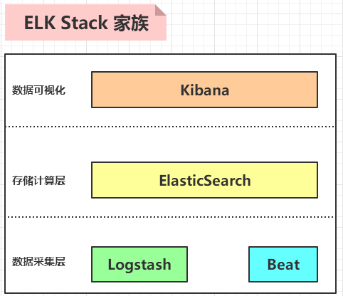
ES 使用架构
将 ES 应用到项目中时，可以有两种架构
一种是使用 ES 作为唯一的后端；
另一种是 ES 与数据库系统配合，一同作为后端。
ES 作为唯一后端
ES 作为一个现代化的搜索引擎，它本身除了拥有检索功能外，还拥有存储功能。
因此，在一个不复杂的项目中，可以将 ES 作为唯一的后端来使用。
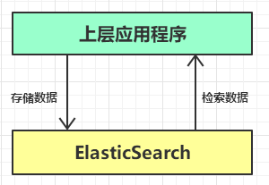
ES 与数据库系统配合
在比较复杂的项目中，ES 无法提供传统数据库的所有功能（比如事务处理），因此需要将 ES 和传统数据库来配合使用。
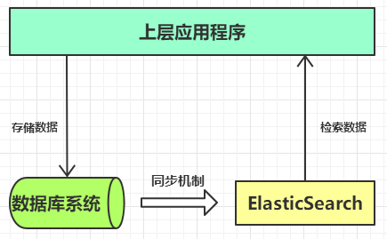
ES 的应用
ES 客户端接口
ES 支持丰富的 Clients 接口可与其进行交互，使得开发者可以用多种编程语言，多种方式进行接入。
ES 企业应用
目前你所熟知的很多应用都使用了 ES 来提供搜索功能，比如 GitHub，Wikipedia 等。
ES 云服务商
很多大的云服务商都提供了 ES 托管服务，比如谷歌，微软，亚马逊，阿里巴巴等。
1. 电商，百科，app等都大量使用搜索功能
2. 大数据的日志分析，数据挖掘，数据清洗与展示
3. ES天然高性能，支持分布式集群
4. 对运维友好，不需要写java代码也可以维护ES
5. 社区强大
基于ES实现的搜索功能，你输入了关键字，自动已经去ES里搜索了
ES 官方文档
这里是 Elastic 所有产品的学习文档。
总结
ES 是一款强大的搜索引擎系统，我们可以基于它为用户提供搜索功能。
ES 提供了丰富的客户端接口和 ELK Stack 产品家族供开发者使用，极大的降低了企业构建搜索服务的难度。
ELK Stack 被广泛应用于搜索、日志管理、安全分析、指标分析、业务分析、性能监控等领域。
下一节将介绍 ES 的安装及简单使用。
2.安装ES
本节来介绍 ES 的安装。
下载 ES
ES 是基于 Java 语言开发的，因此，要安装 ES，首先需要有 Java 环境。
从 ES 7.0 开始，ES 内置了 Java 环境，所以如果安装的是 7.0 及以上版本的 ES，就不需要额外安装 Java 环境了。
我们可以到 ES 的下载页面去下载 ES 安装包，你可以根据你的系统，选择不同的安装包进行安装。
1.环境初始化，iptables，建议4G内存，关闭swap，selinux
iptables -nL
iptables -F
iptables -X
iptables -Z
iptables -nL
getenforce
2.直接部署ES即可，内置jdk，下载7.9.1版本，生产下使用的版本。
[root@devops01 ~]#ls -lh
total 305M
-rw-------. 1 root root 1.3K Jun 25 22:51 anaconda-ks.cfg
-rw-r--r-- 1 root root 305M Nov 18 23:53 elasticsearch-7.9.1-x86_64.rpm
-rw-r--r--. 1 root root 795 Jun 29 23:21 init2.sh
-rw-r--r--. 1 root root 862 Jun 29 23:20 init.sh
-rw-r--r-- 1 root root 542 Nov 8 00:20 login.sh
-rw-r--r-- 1 root root 541 Nov 8 00:36 zk.sh
[root@devops01 ~]#
# 安装ES
[root@devops01 ~]#rpm -ivh elasticsearch-7.9.1-x86_64.rpm
warning: elasticsearch-7.9.1-x86_64.rpm: Header V4 RSA/SHA512 Signature, key ID d88e42b4: NOKEY
Preparing... ################################# [100%]
Creating elasticsearch group... OK
Creating elasticsearch user... OK
Updating / installing...
1:elasticsearch-0:7.9.1-1 ################################# [100%]
### NOT starting on installation, please execute the following statements to configure elasticsearch service to start automatically using systemd
sudo systemctl daemon-reload
sudo systemctl enable elasticsearch.service
### You can start elasticsearch service by executing
sudo systemctl start elasticsearch.service
Created elasticsearch keystore in /etc/elasticsearch/elasticsearch.keystore
[root@devops01 ~]#
查看ES是否运行
[root@devops01 ~]#netstat -tunlp
Active Internet connections (only servers)
Proto Recv-Q Send-Q Local Address Foreign Address State PID/Program name
tcp 0 0 0.0.0.0:22 0.0.0.0:* LISTEN 1006/sshd
tcp 0 0 127.0.0.1:25 0.0.0.0:* LISTEN 1246/master
tcp6 0 0 127.0.0.1:9200 :::* LISTEN 1640/java
tcp6 0 0 ::1:9200 :::* LISTEN 1640/java
tcp6 0 0 127.0.0.1:9300 :::* LISTEN 1640/java
tcp6 0 0 ::1:9300 :::* LISTEN 1640/java
tcp6 0 0 :::22 :::* LISTEN 1006/sshd
tcp6 0 0 ::1:25 :::* LISTEN 1246/master
3.检查ES
如果启动成功，ES Server 将在本机的 9200 端口监听服务。
我们可以使用 curl 命令访问本机 9200 端口，查看 ES 是否启动成功。如果输出像下面这样，则说明启动成功：
[root@devops01 ~]#curl 127.0.0.1:9200
{
"name" : "devops01",
"cluster_name" : "elasticsearch",
"cluster_uuid" : "upjd7CtMRciqivcC0kkk8A",
"version" : {
"number" : "7.9.1",
"build_flavor" : "default",
"build_type" : "rpm",
"build_hash" : "083627f112ba94dffc1232e8b42b73492789ef91",
"build_date" : "2020-09-01T21:22:21.964974Z",
"build_snapshot" : false,
"lucene_version" : "8.6.2",
"minimum_wire_compatibility_version" : "6.8.0",
"minimum_index_compatibility_version" : "6.0.0-beta1"
},
"tagline" : "You Know, for Search"
}
[root@devops01 ~]#
4.查看ES配置文件
[root@devops01 ~]#rpm -qc elasticsearch
/etc/elasticsearch/elasticsearch.yml # 主配置
/etc/elasticsearch/jvm.options # es占用多少内存
/etc/elasticsearch/log4j2.properties
/etc/elasticsearch/role_mapping.yml
/etc/elasticsearch/roles.yml
/etc/elasticsearch/users
/etc/elasticsearch/users_roles
/etc/init.d/elasticsearch # 启动脚本
/etc/sysconfig/elasticsearch # 环境变量
/usr/lib/sysctl.d/elasticsearch.conf # 内核参数
/usr/lib/systemd/system/elasticsearch.service
[root@devops01 ~]#
日志目录
[root@devops01 ~]#ls /var/log/elasticsearch/
5.修改配置文件，重启ES
# ES配置文件，坑比较多，复制粘贴即可
[root@devops01 ~]#
[root@devops01 ~]#cp /etc/elasticsearch/elasticsearch.yml{,.ori}
cat > /etc/elasticsearch/elasticsearch.yml <<'EOF'
node.name: devops01
path.data: /var/lib/elasticsearch
path.logs: /var/log/elasticsearch
bootstrap.memory_lock: true
network.host: 127.0.0.1,10.0.0.18
http.port: 9200
discovery.seed_hosts: ["10.0.0.18"]
cluster.initial_master_nodes: ["10.0.0.18"]
EOF
6.重启es，这里应该会报错
解决办法
https://www.elastic.co/guide/en/elasticsearch/reference/current/setting-system-settings.html#systemd
[root@devops01 ~]#systemctl edit elasticsearch.service
[root@devops01 ~]#systemctl daemon-reload
[root@devops01 ~]#systemctl restart elasticsearch.service
# author: www.yuchaoit.cn
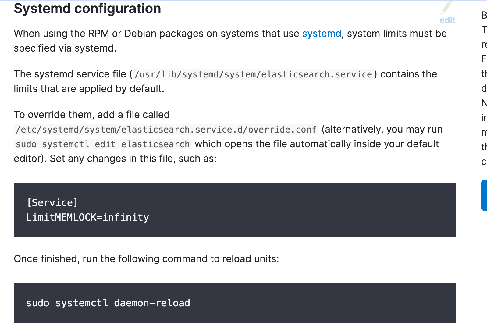
正确重启ES
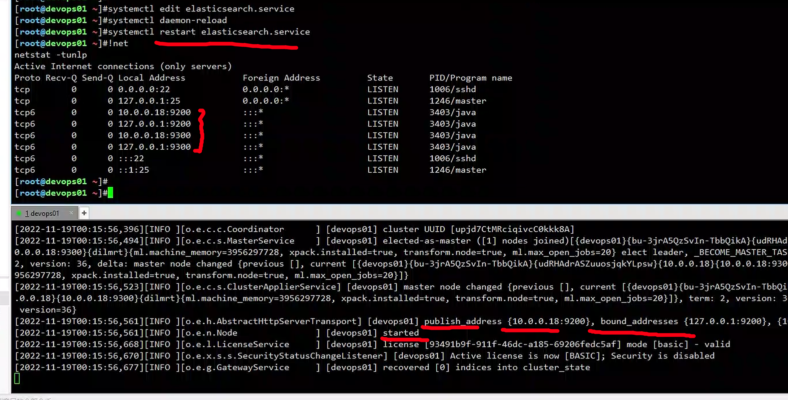
浏览器访问
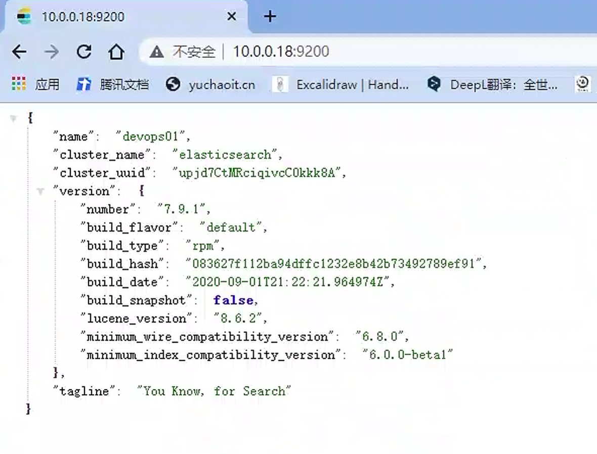
修改es内存占用
es运行后申请内存大小
结合配置参数bootstrap.memory_lock: true
/etc/elasticsearch/jvm.options
3.安装ES插件
es数据库需要通过api接口进行交互，如http接口，基于http method交互。
用起来太费劲，可以用三方插件，显示ES集群信息。
如数据写入
curl -X PUT 'http://10.0.0.18:9200/linux_yu/_doc/1' -H 'Content-Type: application/json' \
-d '
{
"name":"yu",
"age":"18"
}
'
https://github.com/mobz/elasticsearch-head
一个前端展示es集群的插件
安装方式推荐
1. npm安装
2. docker安装
docker run -p 9100:9100 mobz/elasticsearch-head:7
3. google浏览器装插件（用这个）
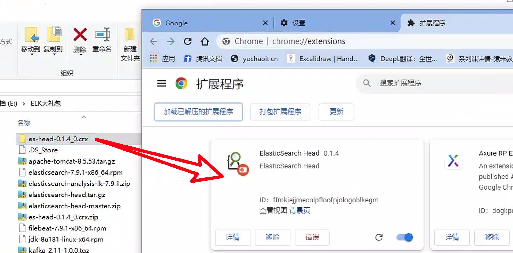
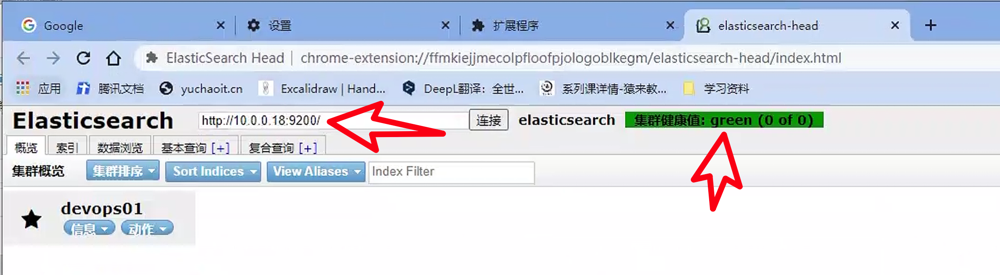
4.kibana部署
es-head插件写入数据
好比之前超哥讲解mongodb，也要对比mysql去理解，更简单些。
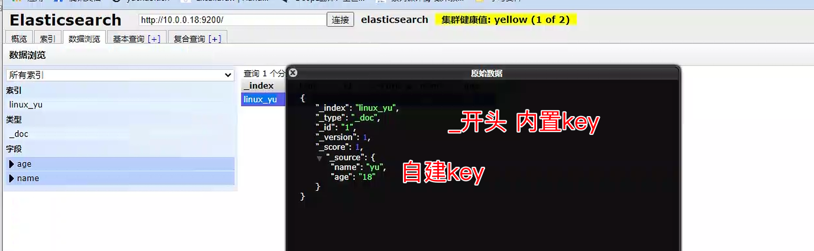
官网的es数据写入
https://www.elastic.co/guide/en/elasticsearch/reference/current/docs-index_.html
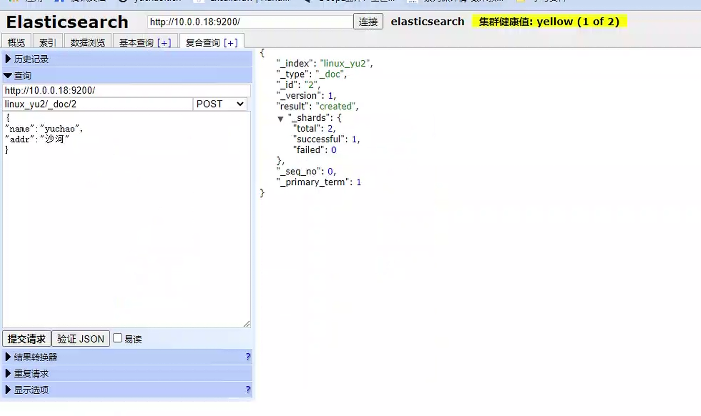
安装kibana
https://www.elastic.co/cn/what-is/kibana
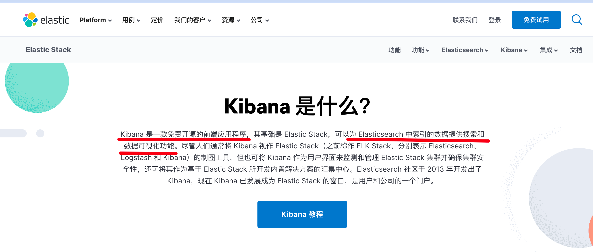
[root@devops01 /opt]#ls kibana-7.9.1-x86_64.rpm
kibana-7.9.1-x86_64.rpm
[root@devops01 /opt]#rpm -ivh kibana-7.9.1-x86_64.rpm
warning: kibana-7.9.1-x86_64.rpm: Header V4 RSA/SHA512 Signature, key ID d88e42b4: NOKEY
Preparing... ################################# [100%]
Updating / installing...
1:kibana-7.9.1-1 ################################# [100%]
[root@devops01 /opt]#
修改配置文件
[root@devops01 /opt]#vim /etc/kibana/kibana.yml
[root@devops01 /opt]#grep '^[a-z]' /etc/kibana/kibana.yml
server.port: 5601
server.host: "10.0.0.18"
elasticsearch.hosts: ["http://localhost:9200"]
kibana.index: ".kibana"
[root@devops01 /opt]#
启动kibana
systemctl start kibana
# 启动时间会较久
确保端口启动
[root@devops01 ~]#netstat -tunlp|grep 5601
tcp 0 0 10.0.0.18:5601 0.0.0.0:* LISTEN 1782/node
[root@devops01 ~]#
内存占用
[root@devops01 ~]#free -m
total used free shared buff/cache available
Mem: 7805 2205 3361 11 2238 4864
Swap: 3967 0 3967
[root@devops01 ~]#
访问kibana
必须确保es后端正确启动，kibana才能工作。
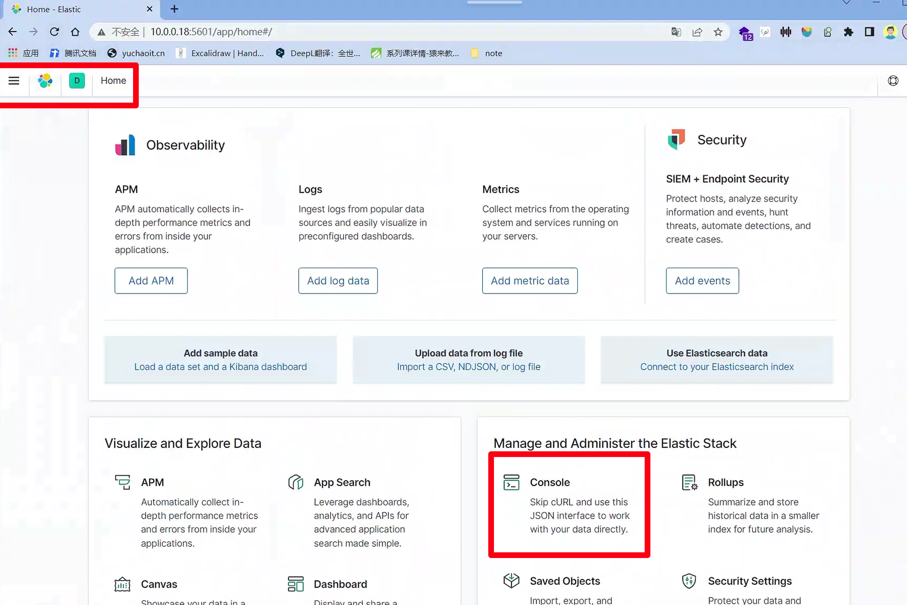
在kibana的控制台里，读写es
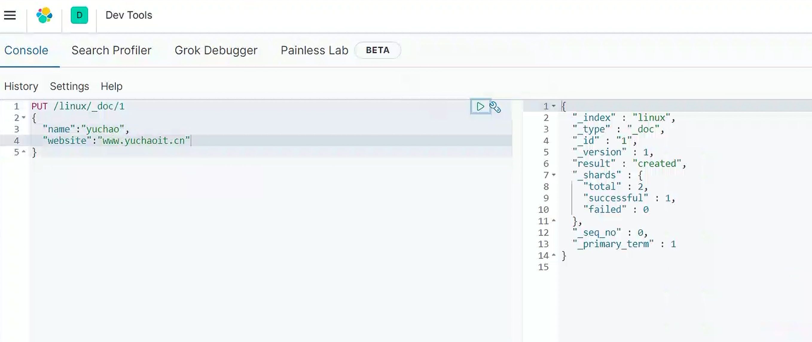
GET方法
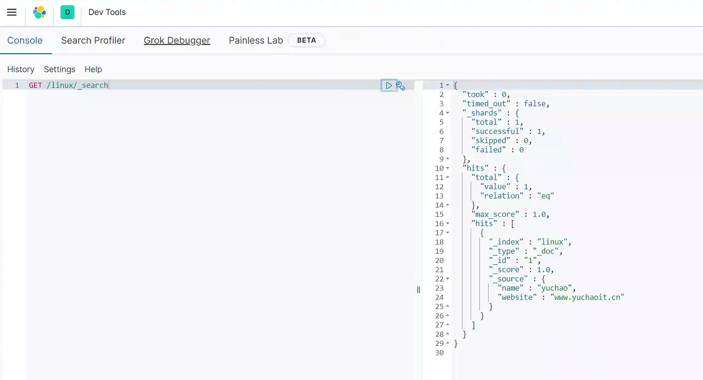
GET /linux/_doc/1
GET /linux/_search
检查es
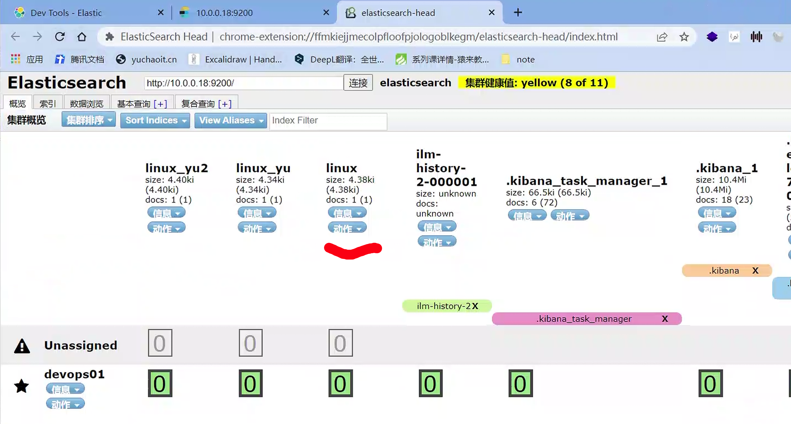
管理es索引
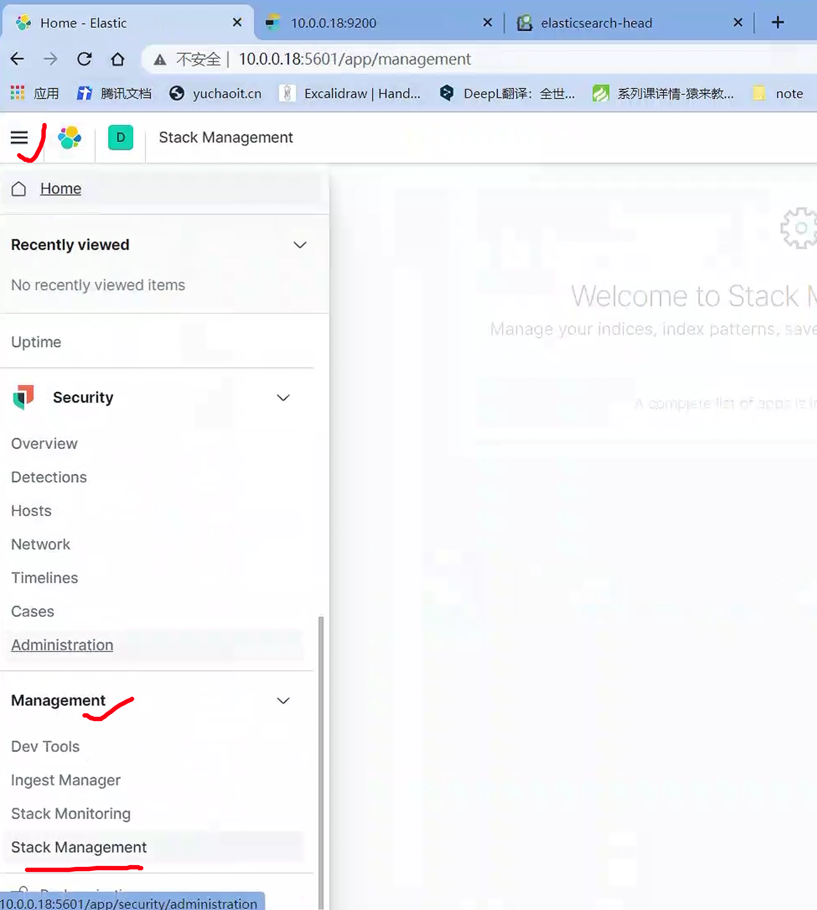
删除索引
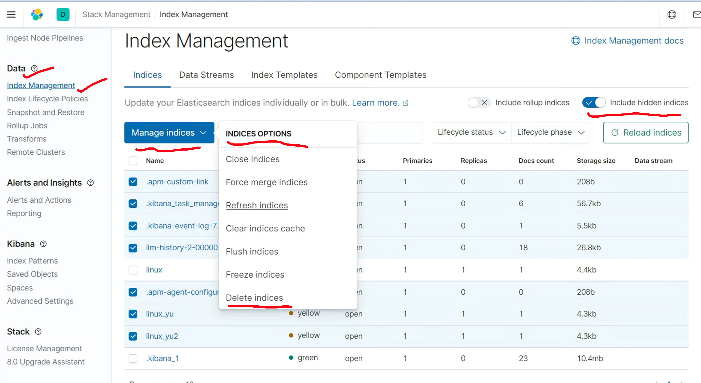
5.kibana数据CRUD
ES数据格式
https://www.elastic.co/guide/en/elasticsearch/reference/current/getting-started-index.html
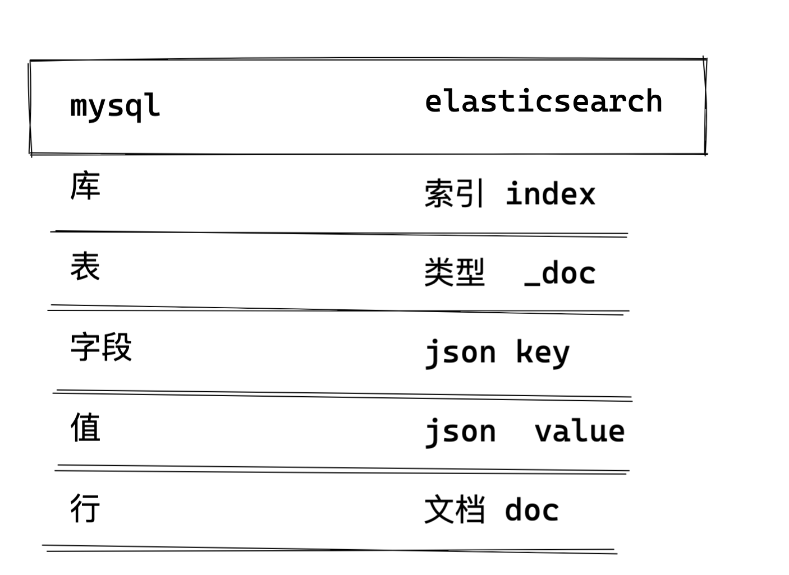
类似于mongodb，直接插入数据，自动创建索引（库）
插入数据
# 方法1，走http
# 语法
# 一个索引里只有一个类型
# json语法
索引名/类型/ID
curl -X PUT 'http://10.0.0.18:9200/linux_yu/_doc/1' -H 'Content-Type: application/json' -d \
'{"name":"yu","website":"www.yuchaoit.cn"}'
# 方法2，走kibana，简单些，图形化接口，封装了es的连接地址，以及json请求数据类型
PUT linux_yu/_doc/1
{"name":"yu","website":"www.yuchaoit.cn"}
# 上述是指定ID，还可以随机ID，注意必须是POST方法
POST linux_yu/_doc/
{"name":"yu","website":"www.yuchaoit.cn"}
# PUT方法用于指定ID，修改数据
# POST方法用于新创建数据
查询数据
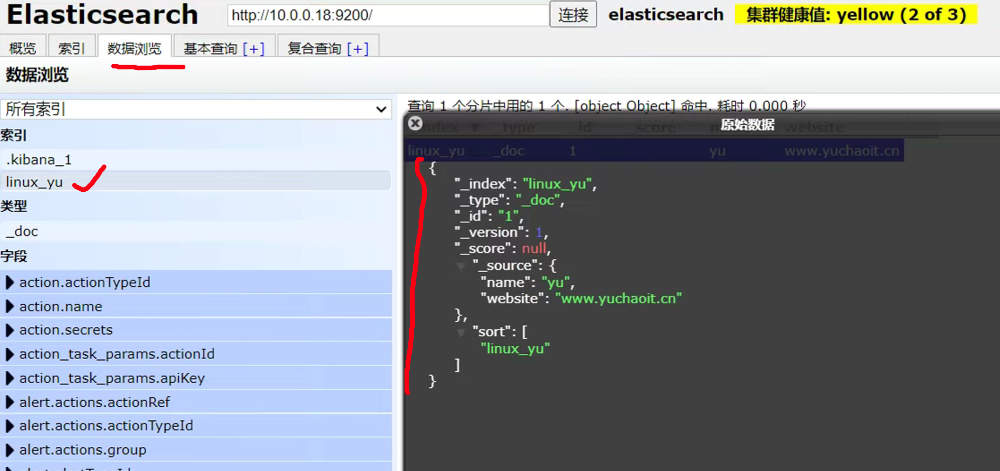
[root@devops01 ~]#curl -X GET 'http://10.0.0.18:9200/linux_yu/_doc/1'
{"_index":"linux_yu","_type":"_doc","_id":"1","_version":1,"_seq_no":0,"_primary_term":1,"found":true,"_source":{"name":"yu","website":"www.yuchaoit.cn"}
}[root@devops01 ~]#
# kibana
GET linux_yu/_doc/1
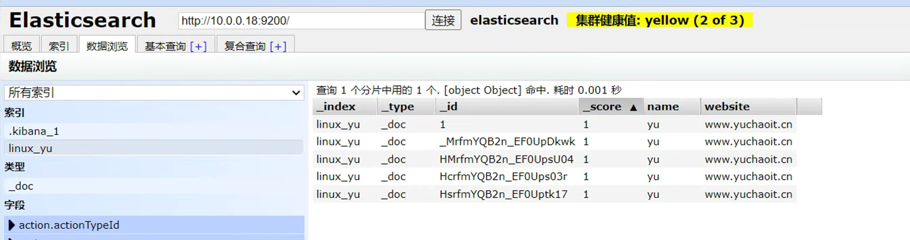
图解mysql理解es数据
POST linux_yu/_doc/1
{
"name":"yuchao",
"age":"18",
"address":"北京",
"hobby":"学习"
}
POST linux_yu/_doc/2
{
"name":"sanpang",
"age":"28",
"address":"江苏",
"hobby":"美女"
}
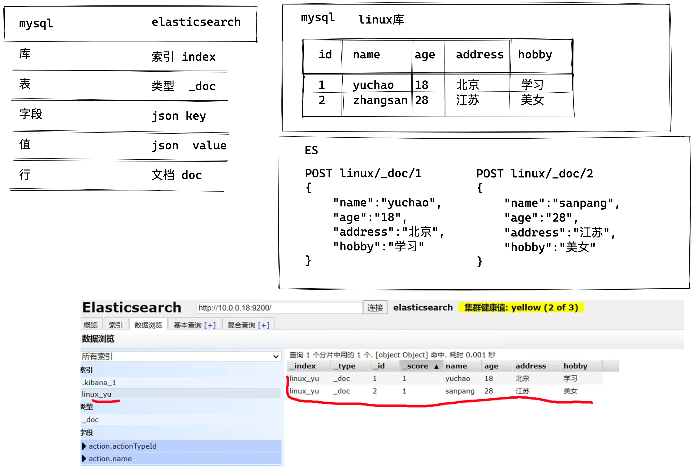
推荐写法
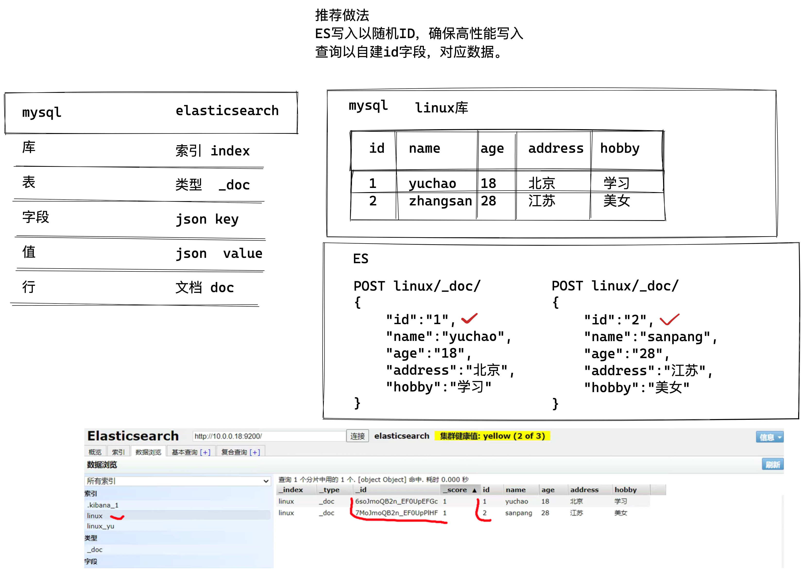
ES官网推荐ID使用随机id
若es指定id插入，存在查询id是否存在的过程，数据量大耗时
使用随机id，确保高性能写入
改造为如下数据，生成随机es的ID，
POST linux_yu/_doc/
{
"id":"1",
"name":"yuchao",
"age":"18",
"address":"北京",
"hobby":"学习"
}
POST linux_yu/_doc/
{
"id":"2",
"name":"sanpang",
"age":"28",
"address":"江苏",
"hobby":"美女"
}
# 数据写入，都是开发以代码写入为主，少有运维手工操作。
ES查询
测试数据

POST /t1/_doc/
{
"name":"yu1",
"age":"28",
"address":"JS",
"job":"dev"
}
POST /t1/_doc/
{
"name":"yu2",
"age":"27",
"address":"BJ",
"job":"dev"
}
POST /t1/_doc/
{
"name":"yu3",
"age":"26",
"address":"SD",
"job":"ops"
}
POST /t1/_doc/
{
"name":"yu4",
"age":"25",
"address":"JX",
"job":"ops"
}
POST /t1/_doc/
{
"name":"jack01",
"age":"19",
"address":"YN",
"job":"test"
}
POST /t1/_doc/
{
"name":"tom02",
"age":"30",
"address":"DB",
"job":"test"
}
POST /t1/_doc/
{
"name":"david03",
"age":"30",
"address":"BJ",
"job":"test"
}
POST /t1/_doc/
{
"name":"xiaohei01",
"age":"17",
"address":"BJ",
"job":"ops"
}
全选批量执行
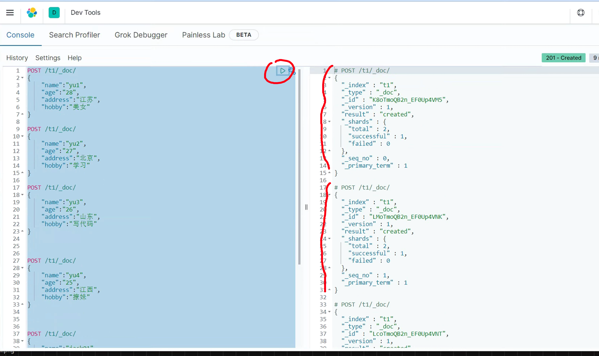
插件检查数据
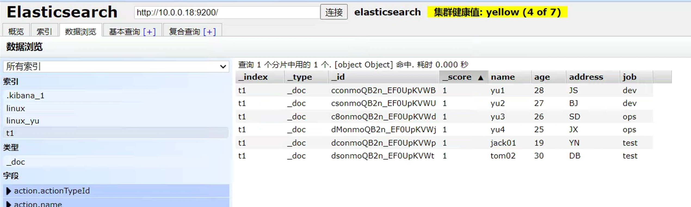
查询ES数据
https://www.elastic.co/guide/en/elasticsearch/reference/current/query-dsl-term-query.html
示例语法
GET /_search
{
"query": {
"term": {
"user.id": {
"value": "kimchy",
"boost": 1.0
}
}
}
}
term查询
根据具体字段查询
# 获取某库所有数据
GET t1/_search
# 条件查找，查询名字，tom02
GET t1/_search
{
"query": {
"term": {
"name": {
"value": "tom02"
}
}
}
}
# 条件查找，查询 age等于30，注意先别琢磨在这个dev tools里查询中文， 有编码问题
GET t1/_search
{
"query": {
"term": {
"age": {
"value": "30"
}
}
}
}
bool查询
https://www.elastic.co/guide/en/elasticsearch/reference/current/query-dsl-bool-query.html
示例语法
GET /_search
{
"query": {
"bool": {
"should": [
{ "match": { "name.first": { "query": "shay", "_name": "first" } } },
{ "match": { "name.last": { "query": "banon", "_name": "last" } } }
],
"filter": {
"terms": {
"name.last": [ "banon", "kimchy" ],
"_name": "test"
}
}
}
}
}
案例
GET t1/_search
{
"query":{
"bool":{
"must": [
{"match":{"job":"ops"}}
],
"filter":{
"range":{
"age":{
"gt":18,
"lt":30
}
}
}
}
}
}
es浏览器插件
基本查询
找出ops人员
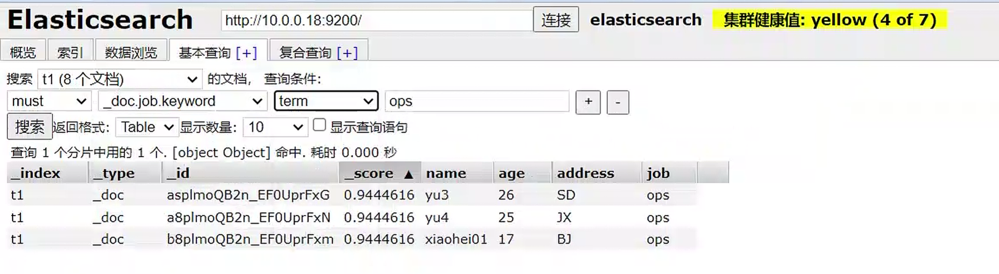
找出ops且在北京的
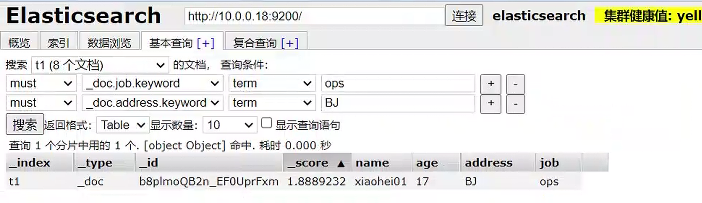
找出ops且年龄大于20的
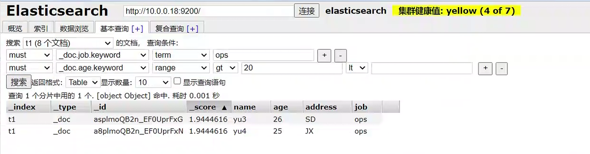
显示ES查询语句
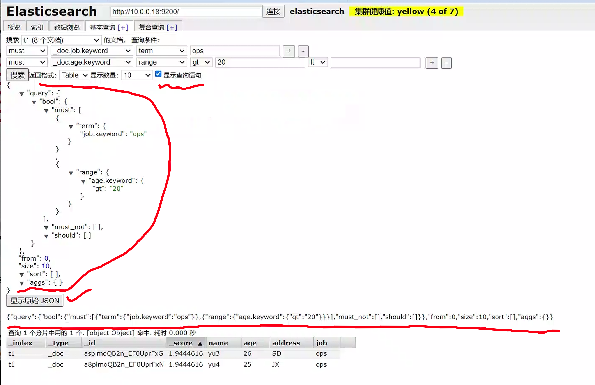
{"query":{"bool":{"must":[{"term":{"job.keyword":"ops"}},{"range":{"age.keyword":{"gt":"20"}}}],"must_not":[],"should":[]}},"from":0,"size":10,"sort":[],"aggs":{}}
kibana格式化json
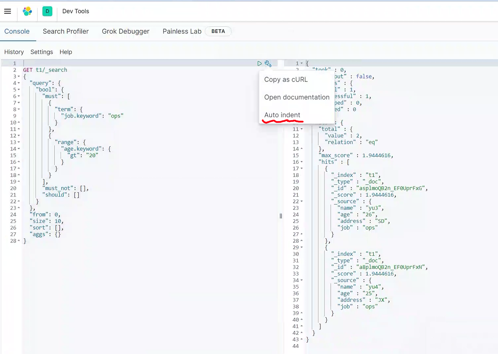
找出北京的dev
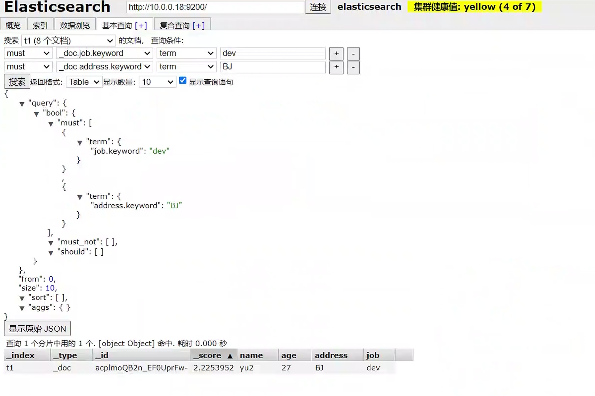
数据浏览过滤
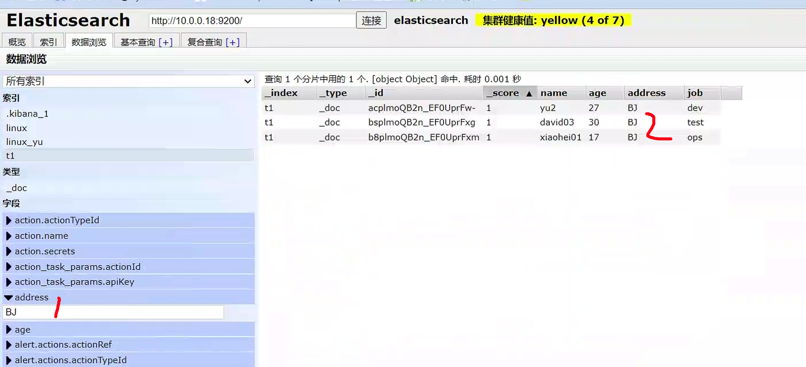
kibana导入ES数据
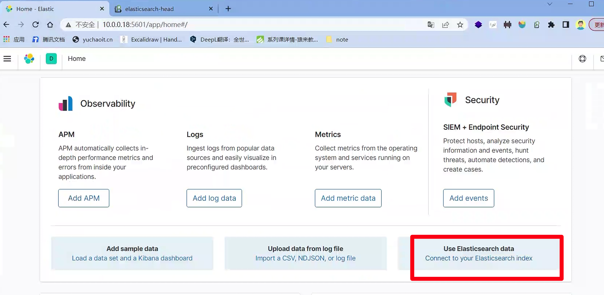
kibana关联es的索引数据。
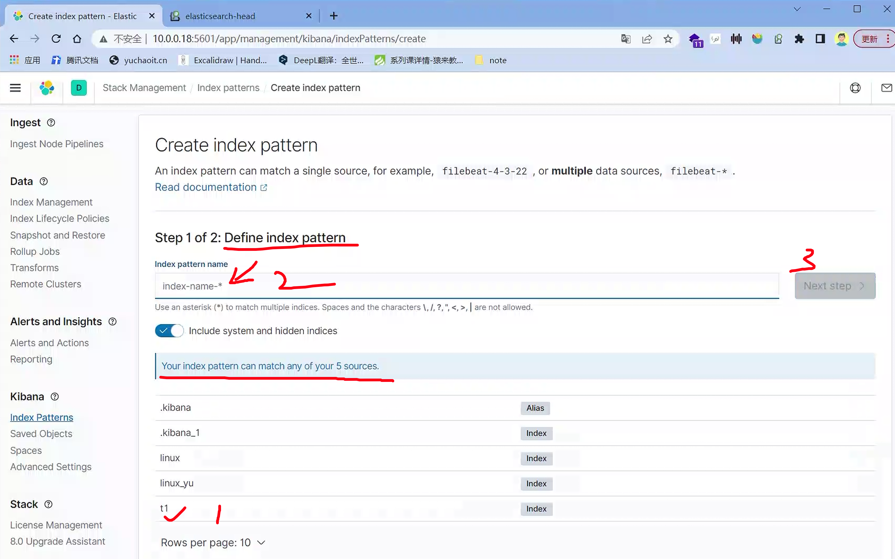
可以输入索引名 如 t1
或者直接* 匹配所有index
创建索引模式
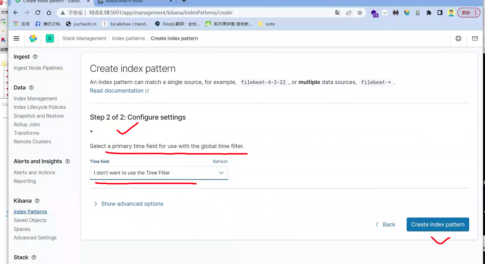
点击discover
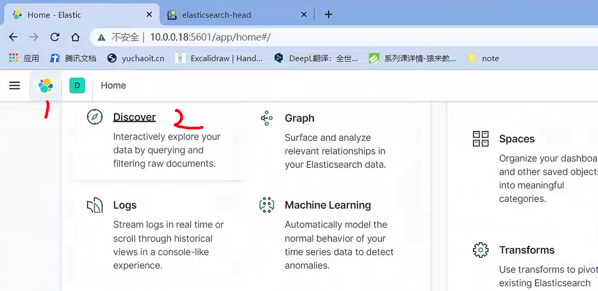
kibana搜索es数据
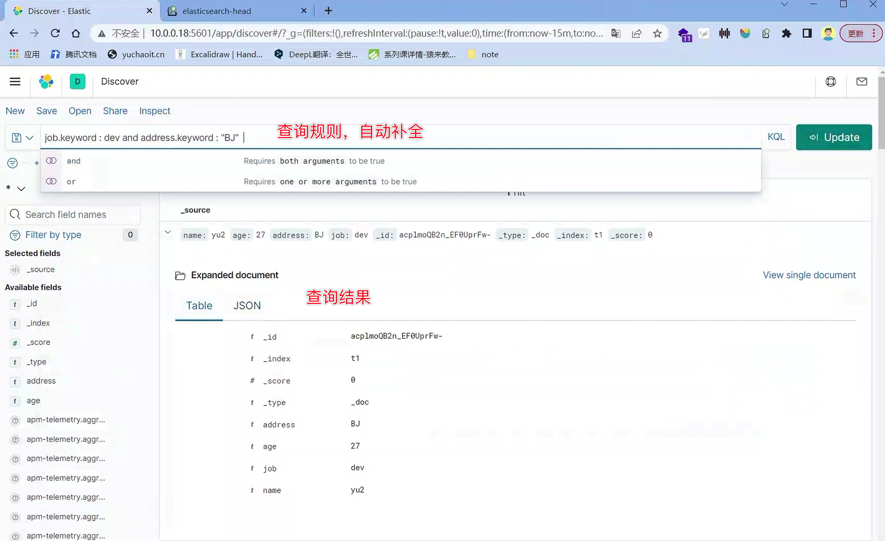
添加过滤器filter
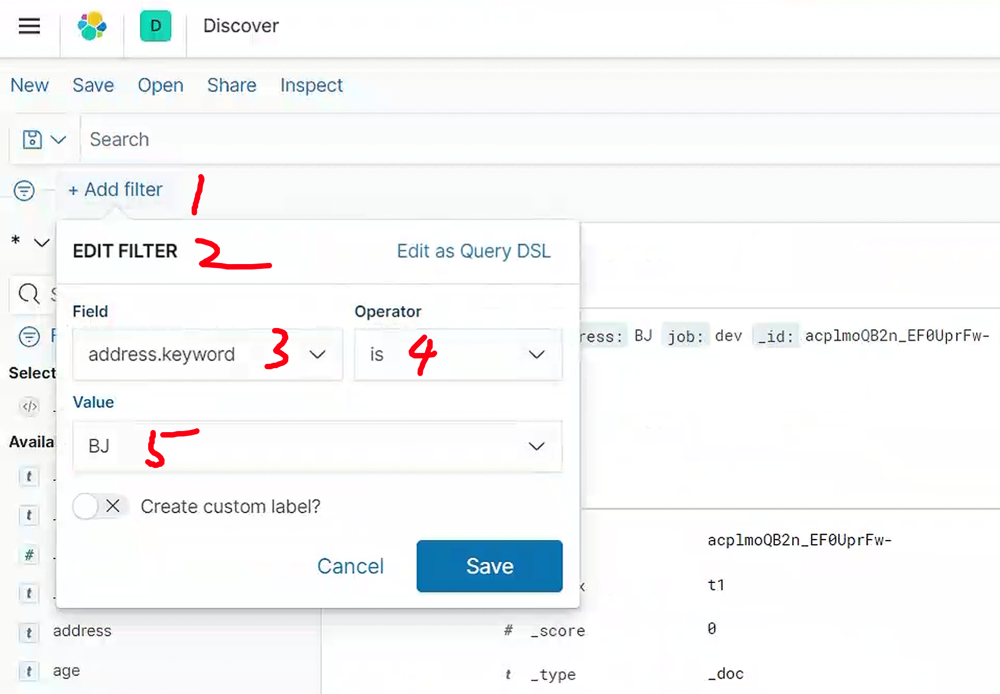
临时关闭条件，或者re-enable
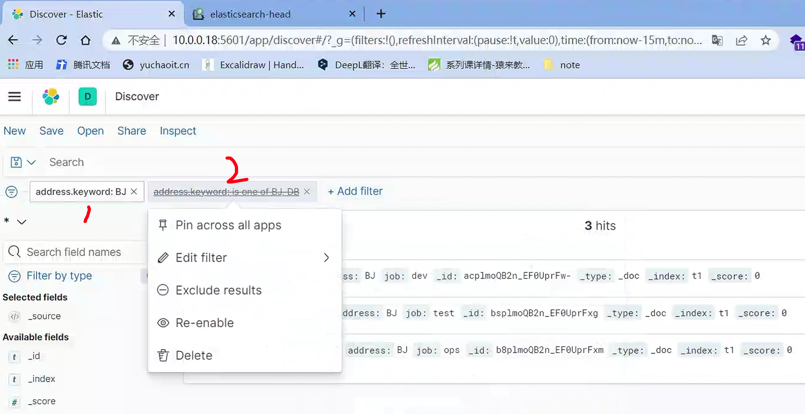
ES更新命令
更新注意原有字段要保留
# 更新xiaohei01 年龄37
PUT t1/_doc/XJHFo4QBMEvtBUsiLq
{
"name" : "xiaoheizi01",
"age" : "47"
}
# 查询所有数据
GET t1/_search
# 更新David01职位为ops,随机ID会自动更新
PUT t1/_doc/W5HFo4QBMEvtBUsiLq-C
{
"name" : "david03",
"age" : "30",
"address" : "BJ",
"job" : "ops"
}
# 更新固定id的数据
PUT t1/_doc/1
{
"name":"chaoge01",
"age":"18888"
}
更新随机id
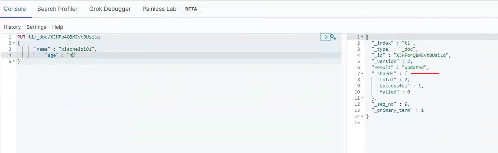
更新固定id，状态是updated
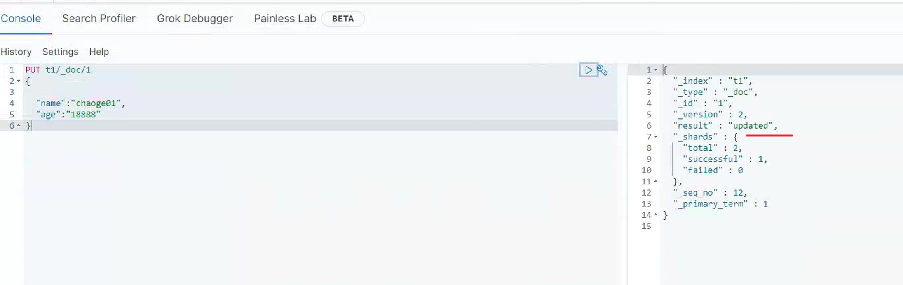
获取随机ID
POST /t2/_doc/
{
"id":"1",
"name":"yu1",
"age":"28",
"address":"JS",
"job":"dev"
}
POST /t2/_doc/
{
"id":"2",
"name":"yu2",
"age":"27",
"address":"BJ",
"job":"dev"
}
POST /t2/_doc/
{
"id":"3",
"name":"yu3",
"age":"26",
"address":"SD",
"job":"ops"
}
# 先根据自定义条件，如id号，找出数据，查找出随机id
GET t2/_search
{
"query":{
"term":{
"id":{
"value":"3"
}
}
}
}
PUT t2/_doc/KZHjo4QBMEvtBUsi2baI
{
"id" : "3",
"name" : "yu3",
"age" : "2666666",
"address" : "SD",
"job" : "ops"
}
# 此类操作，是为了理解，ES是如何更新数据的过程
# 一般都是后端程序，代码级去调用ES，更新数据的过程。
ES删除数据
# 根据id删除数据
DELETE t2/_doc/KZHjo4QBMEvtBUsi2baI
# 删除index，删库，不推荐做法，删索引该操作
DELETE t2/
# 使用索引的关闭功能
# 依然不推荐你操作，让DBA组去维护
# delete 还支持 _delete_by_query接口，基于查询规则，匹配删除
# 暂时无须了解
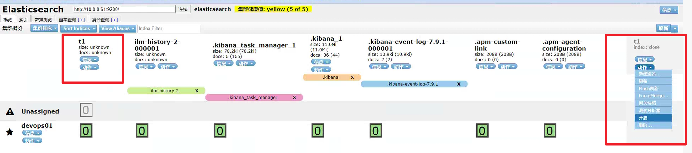